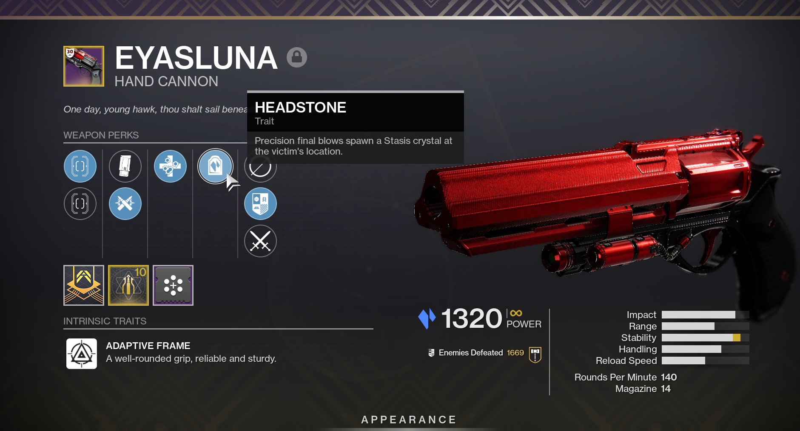
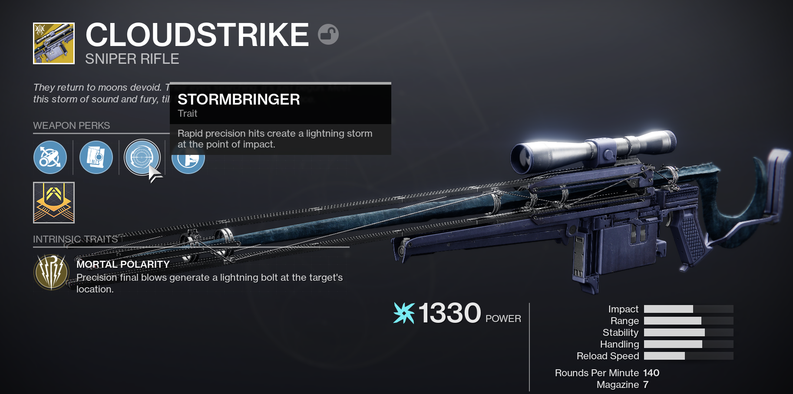
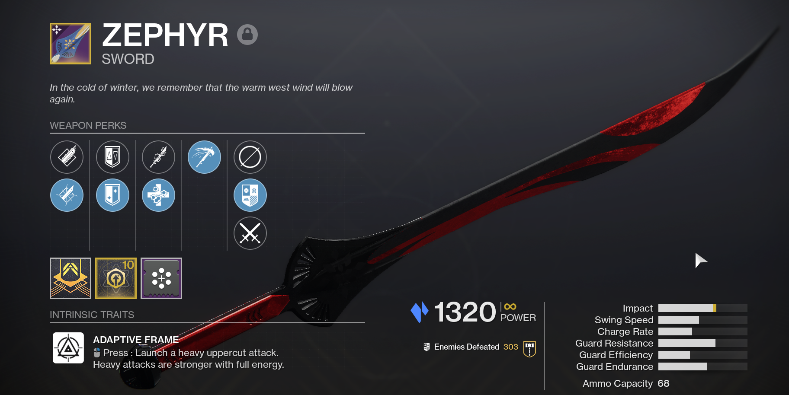

Tutorial
My greatest passion in life is sharing knowledge with others. Historically, I've taught using in-person presentations, step-by-step guides, and with the recent move to work from home, Microsoft OneNote notebooks to assist my coworkers and employees. Today, we'll be doing something a bit more exciting. In this section, I'll take you through how I create a guide by referencing one of the video games I play, Destiny 2.
With any guide I create, my first focus is the purpose of the guide. "What do I hope my reader will be able to achieve upon completion of this guide?" For my professional life, I aspire to have the employee perform the task as seamlessly as possible. In our example, we'll be arming a player with an arsenal to defeat numerous enemies at once with plenty of defensive capabilities.
Here's where we set off into uncharted waters with our beloved reader. When
creating a guide, I like to start with a teaser to show the reader:
"When you are done with this tutorial, this is what you'll be able to do."
Let's get started. We'll be discussing the following with our player:
It is imperative we gain our reader's trust. To do this, we'll provide information followed immediately by preemptively answering questions that may be thought of subsequently. First, let's tell our reader which weapons we'll be using. Naturally, the next question is: "How do I obtain that weapon?" or "What does that weapon do?" which we will answer within the table.
I. Weapons
| Image | Weapon Name | Source | Description |
|---|---|---|---|
|  | Eyasluna | Grasp of Avarice Dungeon | This will be our bread and butter weapon and used very frequently. It deals Stasis damage and has the perk Headstone, where a precision final blow spawns a Stasis crystal at the victim's location. More on this later. |
|  | Cloudstrike | Completing Empire Hunts | Cloudstrike will be our halfway point between dealing damage to bosses and clearing out multiple, low health enemies. This sniper rifle creates a lightning storm upon a precision final blow at the target's location. |
|  | Zephyr | Gifts in Return from Dawning Event | Zephyr will be how we deal with high health enemies. This sword deals Stasis damage and deals a lot of damage in a short period of time with its heavy attack. |
II. Class and Subclass
Now, the reader knows which weapons we are using, what they do, and where to obtain them... but what about the rest of the moves we were doing in the video? Let us offer a second piece of the puzzle. We are using the Titan class on the Behemoth subclass, specifically. This subclass uses the Stasis element to freeze and shatter enemies.
Once in the subclass screen, navigate over the abilities and select the
the following:
Abilities
- Glacier Grenade: a grenade that creates five Stasis crystals at targeted location and can be shattered for damage.
Aspects
- Diamond Lance: defeating a target with Stasis damage creates a Diamond Lance at their body. The Diamond Lance can be picked up and thrown at enemies to freeze and deal damage in an area.
- Tectonic Harvest: shattering a Stasis crystal creates a Stasis Shard which grants melee energy when picked up by you or your allies.
Fragments
- Whisper of Shards: shattering a Stasis crystal temporarily boosts your grenade recharge rate.
- Whisper of Fissures: increase the damage and size of the burst when you destroy a Stasis crystal.
- Whisper of Rime: collecting a Stasis Shard grants a small amount of overshield for a brief time.
- Whisper of Conduction: nearby Stasis Shards track to your position.
- Whisper of Chains: while you are near frozen targets or a friendly Stasis crystal, you take reduced damage from enemies.
III. Mods
At this point, our reader has been told what weapons to use and which class, subclass, and abilities to select. During the tutorial process, I like to connect some dots for the reader and let him or her do the rest once he or she is comfortable. With this section, we'll place the final dots and then begin connecting them together. We've already planted the ideas in their mind by calling out Stasis crystals and Stasis shards. Let's double down on that now.
- Elemental Shards
- Elemental Charge
- Protective Light
- Font of Might
If this guide was an instruction manual to assemble furniture, what we have covered thus far is equivalent to the "Parts" section. Now, onto the actual "Assembly" so to speak. This is where the magic happens. With our reader's mind primed with certain ideas, we can show how everything will string together. Let's discuss my favorite part, gameplay.
IV. Gameplay
Ladies and gentlemen, this is what you've come for. Our objective is simple: to freeze and shatter as many targets as possible using our variety of Stasis damaging capabilities.

The mods we went over are primarily based on creating and picking up Stasis shards to increase our damage with Font of Might, increase our damage resistance with Protective Light, and give us bonus health in the form of an overshield. The quickest way to begin is by using our Glacier Grenade and shattering the crystals with the Titan's Barricade ability. Thanks to Whisper of Shards, our grenade will regenerate much more quickly. So if we're expecting a fight, we'll do this first.

Once our mods are kickstarted, we'll begin the slaying with Eyasluna and Headstone. As mentioned in the Weapons section, Headstone spawns a Stasis crystal at the vicitm's location when defeated with a headshot. We can then shoot that crystal to deal damage to all enemies in the vicinity.

As discussed in the Abilities section, any targets defeated by Stasis damage (e.g. using our Eyasluna, defeating enemies by destroying Stasis crystals, etc.) spawns a Diamond Lance. This powerful tool can clear multiple enemies in one attack.

If we need to dispose of multiple enemies from a safe distance, Cloudstrike has us covered. This weapon can clear multiple enemies with a headshot.

If there is an enemy with a lot of health or someone who is too close for comfort, we can use the Zephyr to dispose of the target quickly with a powerful slash (or two).
V. Conclusion
With the build we've created together, we've shown our reader what the critical components are. We discussed the weapons and provided sources on how to obtain them, which class and subclass to use with corresponding abilities, which mods to equip in your armor to gain their benefits, and shown what the build can do in short demonstrations, as well as a full video of how it all comes together at the top.
For our reader, the fun has just begun. Now they can set foot out into the world and slay countless enemies with a strong build balancing potent offense and reliable defense. As for us, with the Behemoth Titan build complete, our job is complete. Thanks for coming along and creating this guide with me. I hope you enjoyed reading as much as I enjoyed writing it!